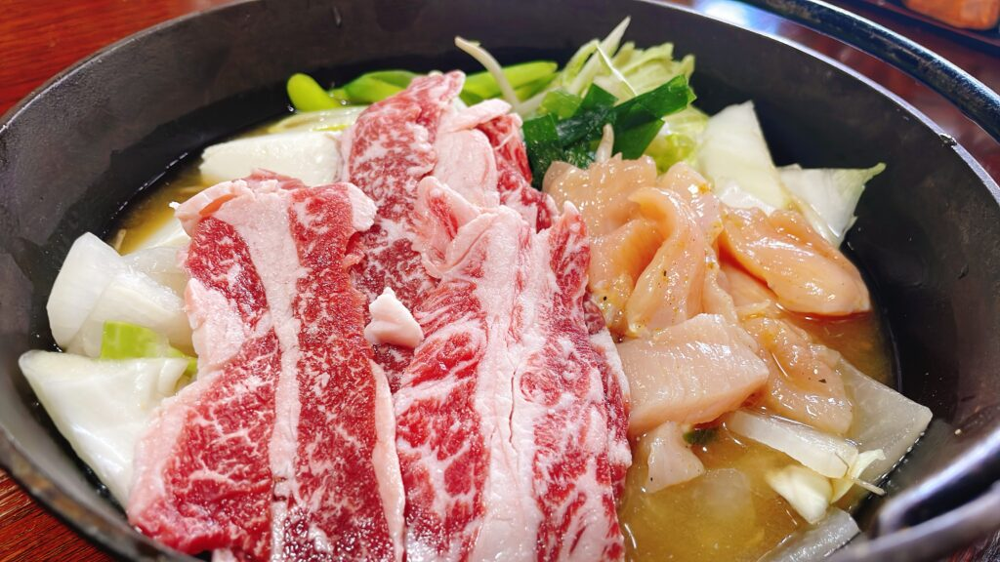
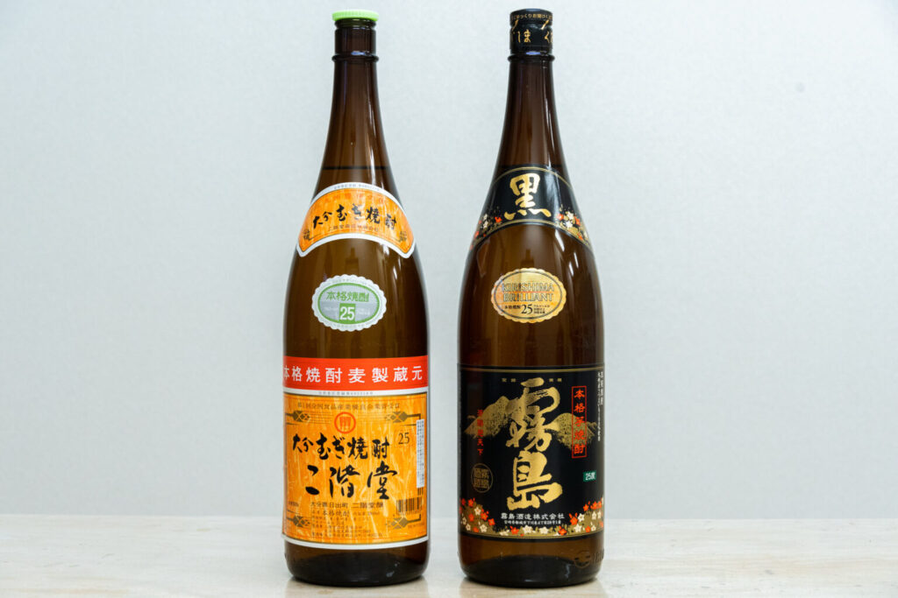
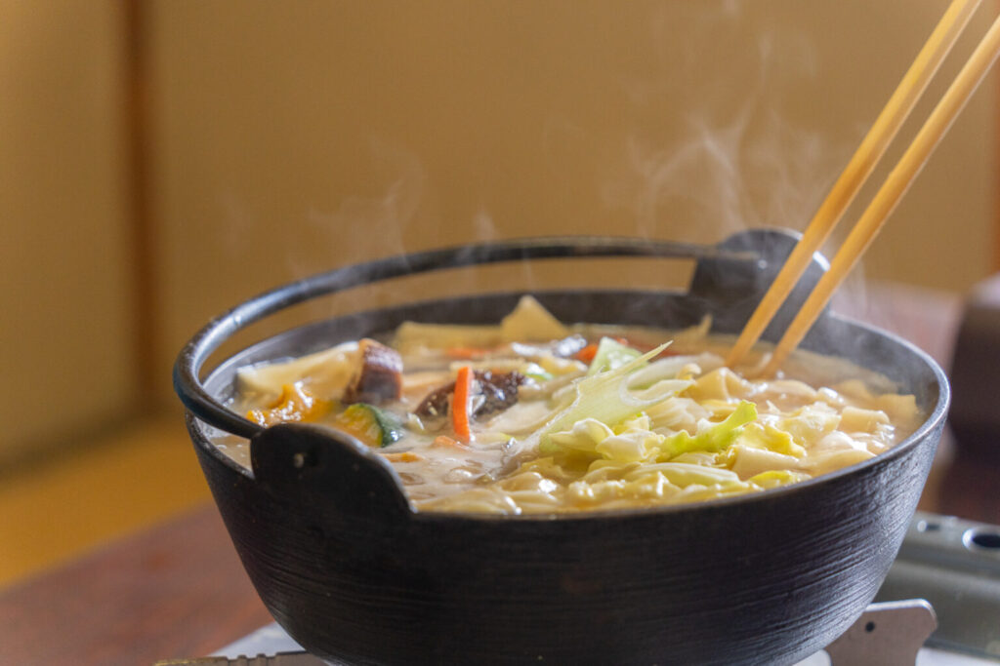
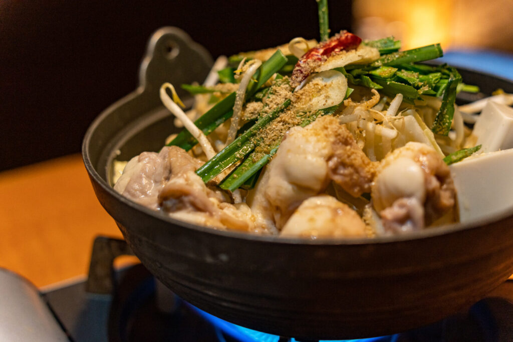
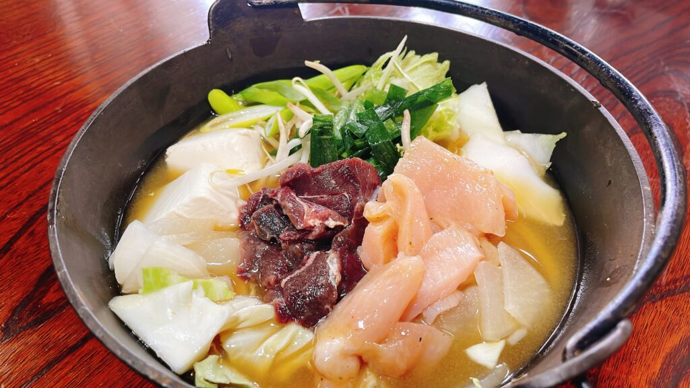
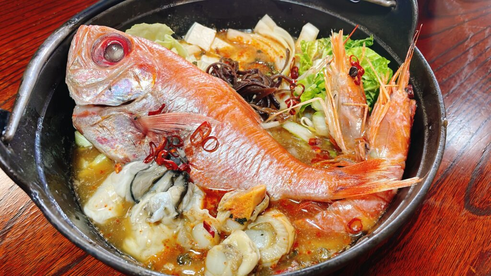
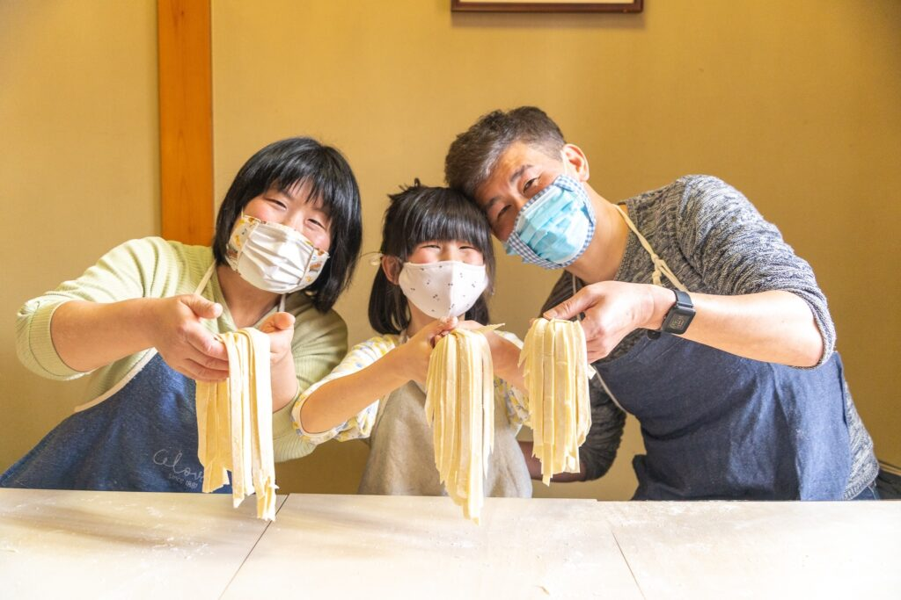
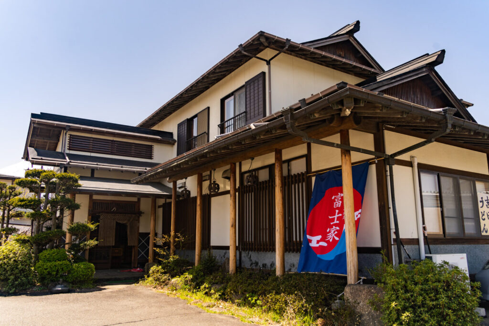

マシマシ高菜先生が選ばれる理由

最大80名の圧倒的キャパ
8名様からの個室貸切はもちろん、最大80名様まで対応。河口湖エリアで大人数が一堂に会せる数少ない宴会場です。

待ち時間ゼロのセルフ酒場
ドリンクはお客様自身で作るスタイル。注文の待ち時間がなく、自分のペースで自由に宴会を楽しめます。

山梨の美食を味わい尽くす
甲州ワインビーフやジビエ、ほうとう等、地場食材を厳選。地元の方には日常の贅沢を、観光の方には本場の味を。
飲み放題システム（2.5時間制）
飲み放題込みプランと料理のみプランをご用意。料理のみは各コース¥1,500引き。セルフスタイルなのでその分お得に楽しめます。
Standard
スタンダード飲み放題
コース料金込み
サワー / ハイボール / 焼酎 / 日本酒 / 梅酒 / ワイン
ソフトドリンク各種
※ビールは含まれません
Premium
プレミアム飲み放題
+¥500
瓶ビール / 地酒（七賢）
甲州ワイン
※スタンダードのドリンクも全て含む

全コース共通・10品構成
メイン鍋・締め・一部料理がコースによって変わります。


コース①②③④（鮑の煮貝・炊き込みご飯）
枝豆
スピードメニュー
彩り野菜のサラダ
季節の野菜
鮑の煮貝
山梨名物
揚げ物盛り合わせ
鶏唐揚げ＆ポテトフライ
エビ塩焼き
1本/人
キムチ
漬物
メインの鍋
コースごとに変動
山梨産きのこの炊き込みご飯
季節の地元食材
締めの麺
コースごとに変動
わらび餅
デザート

コース⑤⑥⑦⑧（馬刺し・うな丼）
枝豆
スピードメニュー
彩り野菜のサラダ
季節の野菜
馬刺し
赤身または盛り合わせ
揚げ物盛り合わせ
鶏唐揚げ＆ポテトフライ
エビ塩焼き
1本/人
キムチ
漬物
メインの鍋
コースごとに変動
うな丼
ミニうな丼
締めの麺
コースごとに変動
わらび餅
デザート
全8コース一覧
全コース10品・飲み放題2.5時間込み。麺打ち体験は全コース＋¥2,200で追加可能。
Jiro-style — 二郎系
二郎系豚骨醤油鍋
メイン：豚・鶏・ニンニク・野菜・アブラの豚骨醤油鍋
締め：うどん
鮑の煮貝・炊き込みご飯付き
¥5,000
飲み放題込・税込

Gibier — ジビエ系
鹿と鶏の具だくさん味噌ほうとう鍋
メイン：鹿と鶏の具だくさん味噌鍋
締め：ほうとう
鮑の煮貝・炊き込みご飯付き
¥5,500
飲み放題込・税込

Spicy — 旨辛系
鹿肉と大エビの旨辛鍋
メイン：鹿肉＆大エビ旨辛鍋
締め：ラーメン
激辛高菜先生オリジナルスパイス 鮑の煮貝付き
¥5,500
飲み放題込・税込

Seafood — 海鮮系
牡蠣と大エビの味噌鍋
メイン：牡蠣＆大エビ味噌鍋
締め：ほうとう
馬刺し・うな丼付き
¥6,000
飲み放題込・税込

Seafood — 海鮮系
金目鯛と帆立の黄金寄せ鍋
メイン：金目鯛1匹姿＆帆立寄せ鍋
締め：うどん
馬刺し・うな丼付き
¥6,500
飲み放題込・税込

Premium Meat — 肉系
甲州ワインビーフと鶏の味噌ほうとう鍋
メイン：甲州ワインビーフと鶏の味噌ほうとう鍋
締め：ラーメン
馬刺し・うな丼付き
¥6,500
飲み放題込・税込
Seafood Supreme — 海鮮全部のせ
海鮮全部のせ極み鍋
メイン：金目鯛・帆立・牡蠣・大エビ・鮑
締め：ほうとう
馬刺し・うな丼付き
¥7,000
飲み放題込・税込

Experience — 山梨を全部食べ尽くす
鮑・馬刺し・ほうとう・ワインビーフ
山梨の名物を一夜で全制覇
メイン：甲州ワインビーフ＆海鮮の特製ほうとう鍋
締め：自作ほうとう or うどん体験（+40分）
鮑の煮貝・馬刺し・うな丼 全部込み
¥8,000
飲み放題込・体験込・税込

Kids & Junior Plan
Option
麺打ち体験（①〜⑦に追加可）
ほうとう または うどん。所要時間＋40分。
※⑧コースは最初から含まれます。
+¥2,200
飲み放題なしプラン
料理のみをお楽しみいただくプランです。各コースから¥1,500引き。
① 二郎系豚骨醤油鍋
¥3,500
② 鹿と鶏の具だくさん味噌ほうとう鍋
¥4,000
③ 鹿肉と大エビの旨辛鍋
¥4,000
④ 牡蠣と大エビの味噌鍋
¥4,500
⑤ 金目鯛と帆立の黄金寄せ鍋
¥5,000
⑥ 甲州ワインビーフと鶏の味噌ほうとう鍋
¥5,000
⑦ 海鮮全部のせ極み鍋
¥5,500
⑧ 体験付き山梨満喫コース
¥6,500
料理内容は飲み放題込みコースと全く同じ10品構成です。
ドリンクは別途お好みでご注文いただけます。
Experience — 体験付きプラン
「自分で打つから、もっと旨い」
伝統の手打ち体験
観光コースの目玉は、シメのうどん・ほうとうを粉から打つ本格体験。富士山の水で練り上げた生地を、ご自身で伸ばして切って、熱々の鍋へ！
お子様から海外の方まで、笑顔が溢れる最高の思い出作りをお手伝いします。
⑧コース込み
¥8,000
①〜⑦に追加
+¥2,200

よくあるご質問
8名様以上のご予約で個室の貸切が可能です。30名様以上で大広間の貸切も承っております（最大80名様まで）。
はい、10:00から営業しておりますので、昼からの宴会も大歓迎です。うどんのみのお食事は予約なしでご利用いただけます。
もちろんです。店内は完全禁煙ですので、お子様も安心してお過ごしいただけます。小学生以下は割引、幼児は無料です。
はい。お好きなタイミングでお好みの濃さで作れるセルフスタイルです。待ち時間なしで楽しめるのが好評です。
店舗正面に広い駐車場がございます。大型バスも駐車可能ですので、団体旅行のお客様もご安心ください。
クレジットカード（VISA, Mastercard, AMEX）、PayPay、現金がご利用いただけます。
アクセス

河口湖本店